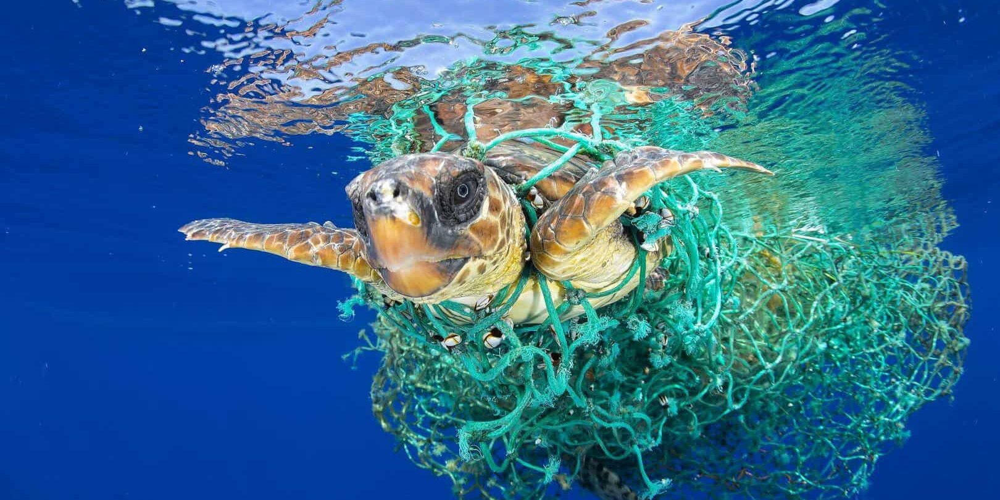
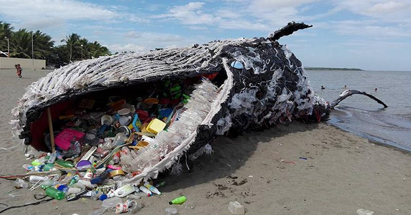
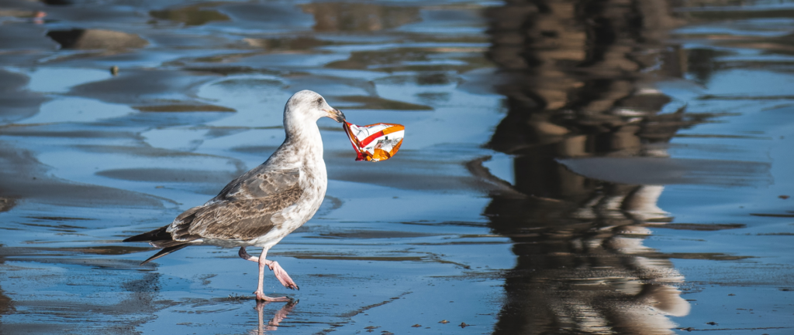

The Plastic Pollution Crisis
Understanding the Scale
Since the 1950s, plastic production has grown exponentially, creating a waste management nightmare. Much of this plastic ends up in our oceans, where it persists for centuries.
500
Years for plastic to degrade
5.25
Trillion plastic particles in the ocean
80%
Of seabirds have plastic in their stomachs
Impact on Marine Life

Over 1,000 sea turtles die annually from plastic entanglement

Whales found with 40kg of plastic in their stomachs

Thousands of seabirds, seals and other marine mammals are killed each year after ingesting plastic.
Plastic Production Timeline
1950
2 million tons produced annually
1980
50 million tons annually
2020
368 million tons annually
2050
Projected 1.1 billion tons annually